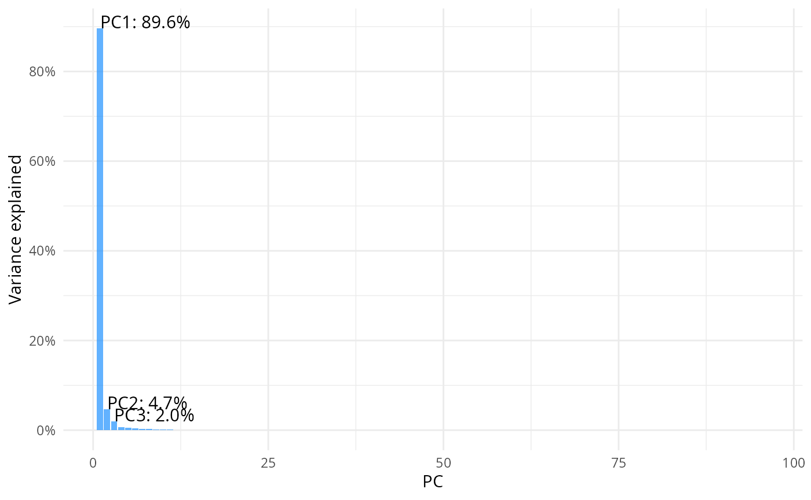
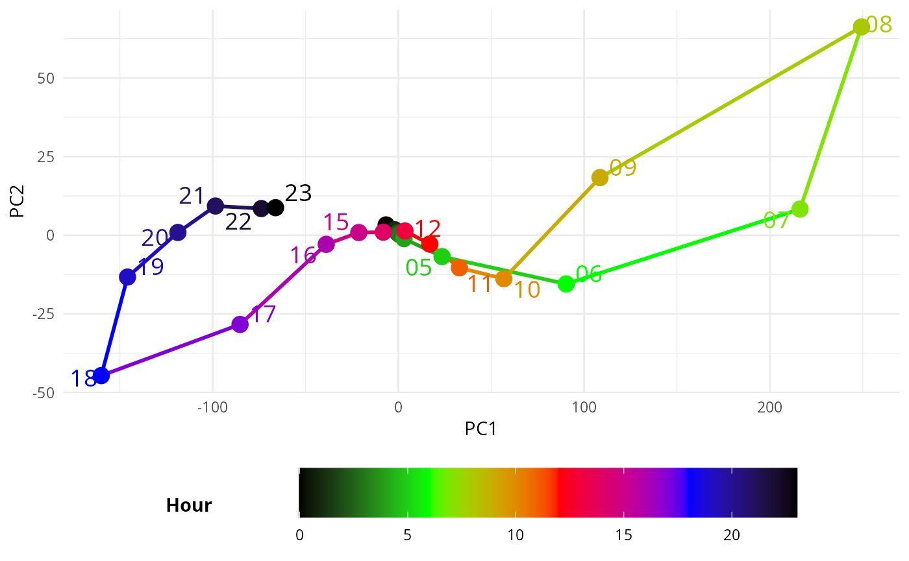
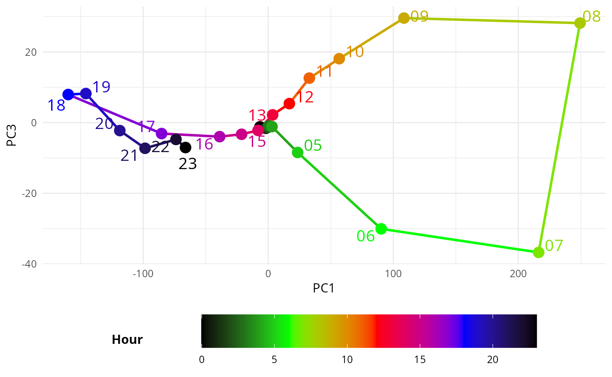

Decouple the spatial and temporal components by PCA
Two-Stepreduction.RmdAim
This article explans the code for the subsequent principal component analysis (PCA), proposed in Two-step dimensionality reduction of human mobility data: From potential landscapes to spatiotemporal insights.
Read files of pontials into a single wide dataframe
read each file and make a wide table
file_paths = c(
"potential_2019_h.csv",
"potential_2019_w.csv",
"potential_2021_h.csv",
"potential_2021_w.csv")
preprocess <- function(file_path) {
#read the file
potential <- read_csv(file_path, col_types=list(zone="c", org_hour="i", dst_hour="i", .default="n"))
#Add one column that is "weekday2019" or "weekday2021" or "weekday2021" or "holiday2021", depending on if "2019" or "2021" is in the file path, and if "weekday" or "holiday" is in the file path
potential$day_type <- case_when(
grepl("2019", file_path) & grepl("_w", file_path) ~ "2019w",
grepl("2019", file_path) & grepl("_h", file_path) ~ "2019h",
grepl("2021", file_path) & grepl("_w", file_path) ~ "2021w",
grepl("2021", file_path) & grepl("_h", file_path) ~ "2021h",
)
#combine day_type and org_hour into one column, like "weekday2019-01", with org_hour two digits
potential$org_hour = paste0(potential$day_type, "-", sprintf("%02d", potential$org_hour))
#arange by org_hour, and select by zone, org_hour, potential
potential <- potential %>% arrange(org_hour) %>% select(zone, org_hour, potential)
#make it a pivot table, where the columns are the zones, the rows are the org_hours, and the values are the potentials
df_wider <- potential %>% pivot_wider(names_from = zone, values_from = potential)
#order by weekday2019-00 to weekday2019-23, then holiday2019-00 to holiday2019-23, then weekday2021-00 to weekday2021-23, then holiday2021-00 to holiday2021-23
df_wider$org_hour <- factor(df_wider$org_hour, levels = c(paste0("2019w-", sprintf("%02d", 0:23)),
paste0("2019h-", sprintf("%02d", 0:23)),
paste0("2021w-", sprintf("%02d", 0:23)),
paste0("2021h-", sprintf("%02d", 0:23))))
return(df_wider)
}
# apply the function to all the files, and combine them into one dataframe
df_wider_all <- map_dfr(file_paths, preprocess)
head(df_wider_all)
#> # A tibble: 6 × 1,319
#> org_hour `533903665` `533903865` `533904805` `533904825` `533904845`
#> <fct> <dbl> <dbl> <dbl> <dbl> <dbl>
#> 1 2019h-00 -0.176 0.0961 -0.229 -0.116 0.191
#> 2 2019h-01 -0.0538 -0.0630 -0.163 0.0925 0.0965
#> 3 2019h-02 -0.148 0.119 -0.0000435 -0.000129 -0.0462
#> 4 2019h-03 -0.0992 0.108 -0.126 -0.0582 -0.111
#> 5 2019h-04 -0.0655 0.0141 -0.0367 0.170 0.153
#> 6 2019h-05 0.0960 -0.213 -0.462 -0.299 -0.206
#> # ℹ 1,313 more variables: `533904885` <dbl>, `533912065` <dbl>,
#> # `533912485` <dbl>, `533912685` <dbl>, `533913005` <dbl>, `533913065` <dbl>,
#> # `533913085` <dbl>, `533913205` <dbl>, `533913225` <dbl>, `533913245` <dbl>,
#> # `533913265` <dbl>, `533913405` <dbl>, `533913425` <dbl>, `533913445` <dbl>,
#> # `533913465` <dbl>, `533913485` <dbl>, `533913625` <dbl>, `533913645` <dbl>,
#> # `533913665` <dbl>, `533913685` <dbl>, `533913825` <dbl>, `533913845` <dbl>,
#> # `533913865` <dbl>, `533913885` <dbl>, `533914005` <dbl>, …Make it into a matrix
m = as.matrix(df_wider_all %>% select(-org_hour))Principle Component Analysis (PCA)
result = prcomp(m, center=T, scale=F)Scree plot
pcs = tidy(result, "pcs")
top3 <- pcs %>% filter(PC %in% 1:3)
ggplot(data = pcs, aes(x=PC, y=percent))+
geom_col(fill="dodgerblue", alpha=0.7) + theme_minimal() +
scale_y_continuous(labels=scales::label_percent(), breaks = scales::breaks_pretty(n=6))+
labs(y= "Variance explained")+
geom_text(
data = top3,
aes(
x = PC,
y = percent,
label = paste0("PC", PC, ": ", scales::percent(percent))
),
vjust = 0,
hjust = 0,
size = 4
)
Save PCA rotation (basis)
rotation_df <- as.data.frame(result$rotation)
rotation_df$MESH2KM <- rownames(result$rotation)
rotation_df = rotation_df %>% select(MESH2KM, PC1,PC2,PC3)
#write_csv(rotation_df, "tmp/prc_basis.csv")
head(rotation_df)
#> MESH2KM PC1 PC2 PC3
#> 533903665 533903665 -0.007638106 0.0081861818 0.022110372
#> 533903865 533903865 -0.008130319 -0.0092918304 -0.009184783
#> 533904805 533904805 -0.020939566 0.0048591637 0.025925711
#> 533904825 533904825 -0.010935582 0.0034375189 0.003985321
#> 533904845 533904845 -0.020297286 0.0047228773 0.010225484
#> 533904885 533904885 -0.030118096 0.0007656441 0.019902749Plot temporal evolution of the PC1, PC2 and PC3
augmented_data = augment(result, data = df_wider_all)
# keep only the columns that start with a dot and also the org_hour column, rename the columns to remove the ".fitted" part
augmented_data = augmented_data %>% select(starts_with("."), org_hour) %>% rename_all(~str_remove(., "\\.fitted"))
# split the org_hour column into two columns, one for the day type and one for the hour
augmented_data = augmented_data %>% separate(org_hour, c("day_type", "hour"), sep="-") %>% relocate(day_type, hour) %>% select(-.rownames)
head(augmented_data)
#> # A tibble: 6 × 98
#> day_type hour PC1 PC2 PC3 PC4 PC5 PC6 PC7 PC8
#> <chr> <chr> <dbl> <dbl> <dbl> <dbl> <dbl> <dbl> <dbl> <dbl>
#> 1 2019h 00 -8.78 -7.10 -0.613 -3.43 1.28 -0.506 1.20 2.93
#> 2 2019h 01 -2.11 -4.24 -1.32 -2.45 0.478 0.728 1.37 1.88
#> 3 2019h 02 -0.508 -2.28 -1.38 -1.72 -0.319 0.500 1.09 1.52
#> 4 2019h 03 0.290 -1.53 -1.02 -1.24 -0.905 0.378 0.838 1.13
#> 5 2019h 04 2.02 0.0869 -0.984 -0.628 -2.12 0.405 0.574 0.609
#> 6 2019h 05 12.6 3.62 -3.46 -0.0853 -1.97 1.00 0.272 0.0869
#> # ℹ 88 more variables: PC9 <dbl>, PC10 <dbl>, PC11 <dbl>, PC12 <dbl>,
#> # PC13 <dbl>, PC14 <dbl>, PC15 <dbl>, PC16 <dbl>, PC17 <dbl>, PC18 <dbl>,
#> # PC19 <dbl>, PC20 <dbl>, PC21 <dbl>, PC22 <dbl>, PC23 <dbl>, PC24 <dbl>,
#> # PC25 <dbl>, PC26 <dbl>, PC27 <dbl>, PC28 <dbl>, PC29 <dbl>, PC30 <dbl>,
#> # PC31 <dbl>, PC32 <dbl>, PC33 <dbl>, PC34 <dbl>, PC35 <dbl>, PC36 <dbl>,
#> # PC37 <dbl>, PC38 <dbl>, PC39 <dbl>, PC40 <dbl>, PC41 <dbl>, PC42 <dbl>,
#> # PC43 <dbl>, PC44 <dbl>, PC45 <dbl>, PC46 <dbl>, PC47 <dbl>, PC48 <dbl>, …pickup weekdau in 2019
filtered_data <- augmented_data %>% filter(day_type == "2019w")
head(filtered_data)
#> # A tibble: 6 × 98
#> day_type hour PC1 PC2 PC3 PC4 PC5 PC6 PC7 PC8 PC9
#> <chr> <chr> <dbl> <dbl> <dbl> <dbl> <dbl> <dbl> <dbl> <dbl> <dbl>
#> 1 2019w 00 -6.61 -3.28 -1.20 -2.74 -0.805 1.21 -0.0104 0.665 -0.0368
#> 2 2019w 01 -2.04 -1.76 -1.62 -2.10 -1.24 1.55 0.702 0.161 -0.246
#> 3 2019w 02 -0.458 -0.762 -1.35 -1.17 -1.28 0.797 0.472 0.154 -0.0177
#> 4 2019w 03 0.466 -0.265 -0.898 -0.968 -1.44 0.431 0.439 0.202 0.0560
#> 5 2019w 04 2.99 1.09 -1.14 0.239 -2.55 -0.350 0.813 0.153 -0.222
#> 6 2019w 05 23.5 6.80 -8.44 2.70 -5.56 -2.01 4.10 0.654 -0.551
#> # ℹ 87 more variables: PC10 <dbl>, PC11 <dbl>, PC12 <dbl>, PC13 <dbl>,
#> # PC14 <dbl>, PC15 <dbl>, PC16 <dbl>, PC17 <dbl>, PC18 <dbl>, PC19 <dbl>,
#> # PC20 <dbl>, PC21 <dbl>, PC22 <dbl>, PC23 <dbl>, PC24 <dbl>, PC25 <dbl>,
#> # PC26 <dbl>, PC27 <dbl>, PC28 <dbl>, PC29 <dbl>, PC30 <dbl>, PC31 <dbl>,
#> # PC32 <dbl>, PC33 <dbl>, PC34 <dbl>, PC35 <dbl>, PC36 <dbl>, PC37 <dbl>,
#> # PC38 <dbl>, PC39 <dbl>, PC40 <dbl>, PC41 <dbl>, PC42 <dbl>, PC43 <dbl>,
#> # PC44 <dbl>, PC45 <dbl>, PC46 <dbl>, PC47 <dbl>, PC48 <dbl>, PC49 <dbl>, …pc1 vs pc2
ggplot(filtered_data, aes(PC1, -PC2, color = as.numeric(hour))) + #PC2 flipped
geom_path(aes(group = day_type), linewidth = 1) + # Lines based on hour
geom_point(size = 4) + # Points also based on hour
geom_text_repel(aes(label = hour), min.segment.length = 1, size = 5) + # Point labels
scale_color_gradientn(
colors = c("black", "green", "red", "blue", "black"), # Custom gradient from night to day
values = rescale(c(0, 6, 12, 18, 23)), # Map 0-6 (night) and 18-24 (day) with corresponding colors
name = "Hour"
) +
theme_minimal() +
theme(legend.position = "bottom", # Move legend to the right
legend.box = "horizontal", # Ensure vertical arrangement of legend
legend.title = element_text(face = "bold", margin = margin(r = 50, b = 0)),
) +
guides(
color = guide_colorbar(
barwidth = 20,
barheight = 2,
title.position = "left", # Move the title to the left of the colorbar
title.hjust = 0.5, # Center the title vertically relative to the colorbar
label.vjust = 0.5 # Vertically align the labels
)
) +
labs(x = "PC1", y = "PC2")
#> Warning: ggrepel: 7 unlabeled data points (too many overlaps). Consider
#> increasing max.overlaps
# pc1 vs pc3
ggplot(filtered_data, aes(PC1, PC3, color = as.numeric(hour))) + #PC2 flipped
geom_path(aes(group = day_type), linewidth = 1) + # Lines based on hour
geom_point(size = 4) + # Points also based on hour
geom_text_repel(aes(label = hour), min.segment.length = 1, size = 5) + # Point labels
scale_color_gradientn(
colors = c("black", "green", "red", "blue", "black"), # Custom gradient from night to day
values = rescale(c(0, 6, 12, 18, 23)), # Map 0-6 (night) and 18-24 (day) with corresponding colors
name = "Hour"
) +
theme_minimal() +
theme(legend.position = "bottom", # Move legend to the right
legend.box = "horizontal", # Ensure vertical arrangement of legend
legend.title = element_text(face = "bold", margin = margin(r = 50, b = 0)),
) +
guides(
color = guide_colorbar(
barwidth = 20,
barheight = 2,
title.position = "left", # Move the title to the left of the colorbar
title.hjust = 0.5, # Center the title vertically relative to the colorbar
label.vjust = 0.5 # Vertically align the labels
)
) +
labs(x = "PC1", y = "PC3")
#> Warning: ggrepel: 6 unlabeled data points (too many overlaps). Consider
#> increasing max.overlaps